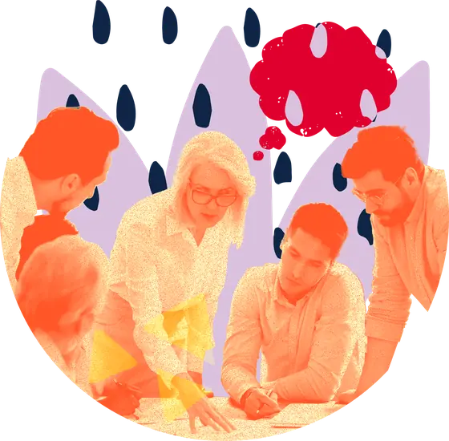
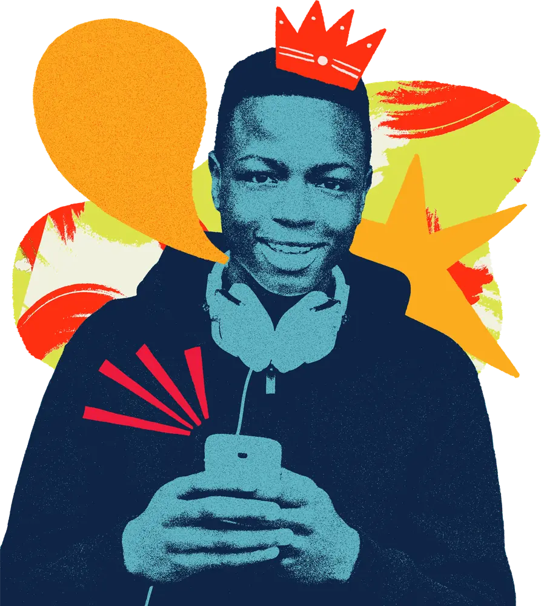

Thanks for thinking of Luke for your event.
Your enquiry has reached us. Luke checks his diary for your date and you’ll get an email with availability, the fee and the keynote we’d recommend for your audience. In the meantime, here’s a short message from Luke about what every booking includes.


More than a keynote
Every booking, in person or online, comes with the same five things, so the learning doesn’t stop when the session ends. Choose one to see what it includes.
A planning call
We talk through your audience, your theme and what you want people to leave with, and shape the keynote around it. Luke speaks from lived experience of care and professional experience of leading change in children’s services, so the talk fits a room of foster carers as well as a room of directors.
You get
- A 30-minute planning call
- The keynote shaped around your audience and theme
- A title and blurb for your programme, plus Luke’s photo and bio
The keynote
One of seven keynotes, or one built for you. Story-led and practical: Luke’s story opens it, the theory underneath gives it rigour, and the room leaves with something to do differently. In person or live online.
You get
- A keynote of up to 90 minutes
- Time for questions and discussion
- The slides, so you can share them with delegates
A workbook for every delegate
A printed or digital workbook built around the keynote, with activities that help delegates take the learning back into their teams. Written in plain language, co-branded with your logo on request.
You get
- A workbook per delegate, print-ready or digital
- Activities for individuals and teams
- Your logo on the cover on request
The recording, for 12 months
Every delegate can watch the full keynote again on The Care Leaders Online for 12 months after your event, and share it with colleagues who could not attend.
You get
- The full keynote recorded
- 12 months’ access for every delegate
- A link you can put in your follow-up email
Follow-up
A short conversation after the event about what landed, and what training or support would carry it on, if you want it. No obligation.
You get
- A follow-up call if you want one
- Delegate feedback, where we gathered it
- Options for training, programmes or a return visit

The keynotes
Download the brochure for any keynote to see what it covers and who it’s for.

Living a Careless Life
Luke’s flagship keynote. Story-led and upbeat, it shows what the adults who made a difference actually did, and gives people practical tools to take back to the children they work with.
Request the brochure
Just Say Yes
Helps carers look past the paperwork and say yes with confidence: what behaviour is really communicating, trauma and attachment in plain language, and simple tools to use at home.
Request the brochureThe Power of the Profile
About the stories we write about children and the doors they open or close. Practical ways to write honest, balanced and hopeful profiles that help other adults say yes.
Request the brochureTools for Schools
How to read the messages in children’s behaviour and respond with the right tools: language and stigma, attachment and trauma, and where school and children’s social care clash.
Request the brochureLived Experience Leadership
Reframes lived experience as a leadership asset, not just a voice to consult, and shows how to build services where people with care experience shape the decisions.
Request the brochure
From Care Leaver to Care Leader
Your story as a strength, not a setback. Luke’s journey from care to national leadership, and how adversity builds real leadership skills.
Request the brochure
Be the First Yes
Care leavers are one of the UK’s most overlooked talent pools. What care experience means, what support looks like, and simple steps to open the door.
Request the brochure
What happens next
1. Check your inbox
You’ll receive an email with Luke’s availability for your date, the fee and the keynote we’d recommend.
2. We hold your date
If Luke is free, we hold the date for you for 14 days while you confirm the details on your side.
3. Confirm by email
Reply to confirm, or book a short call first if you’d like to talk it through. That’s it.